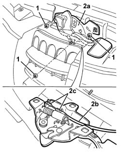
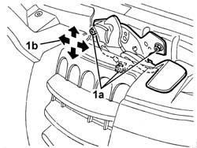

7025A34 BONNET LID LOCK (ONE) - R+R OR REPAIR
- Path
- Procedures > 70 FITTINGS > 7025 COMPARTMENT LIDS > 7025A LOCATION OF BONNET WIND NOISE > 7025A34 BONNET LID LOCK (ONE) - R+R OR REPAIR
- Kind
- repair procedure (removal / refitting; the operation number is the code)
- Applies to
- all engines; all production periods
- Interactive page
- https://sloeber94.github.io/elrnDB-aGt/en/#/125001829
Applies to: all engines; all production periods
 Removing
Removing
 Refitting
RefittingOpen the bonnet lid.
1. Unscrew the nuts.
2. Move the catch (2a) over slightly and disconnect the operating cable (2b) from the retainers (2c).
Remove the catch.

Applies to: all engines; all production periods
Refitting
RemovingCheck that the catch is undamaged.
Connect the operating cable to the catch.
Fit the catch.
1. Screw in the nuts (1a) without tightening them and adjust the catch position. Arrows (1b) indicate possible movements.

Applies to: all engines; all production periods
Tighten the nut to the specified torque.
 | Fastening | Component | Ø | Value (daNm) |
|---|---|---|---|---|
- | Nut | BONNET LID LOCK/S | M6 | 0.8 |
Check that the catch and control system are working.
Topics that link to this page (19)
- 1004B10 POWER UNIT WITH MANUAL GEARBOX - R + R
- 1016D20 LEFT CYLINDER HEAD – R.R. AND REPLACING GASKET
- 1016D24 RIGHT CYLINDER HEAD - R.R. AND GASKET REPLACING
- 1020D38 FLYWHEEL SIDE OIL SEAL - REPLACE
- 1020D51 CRANK SHAFT REAR MOUNT - APPLY SILICONE TO MATING SURFACES
- 1024B10 ENGINE FLYWHEEL - R + R FOR VERSIONS WITH MANUAL GEARBOX
- 1080B39 RIGHT CATALYTIC PRECONVERTER R R OR REPLACE CYLINDER HEAD GASKET
- 1084B34 CARTRIDGE ENGINE OIL FILTER SUPPORT - R + R
- 1088B20 ENGINE COOLING RADIATOR - R + R
- 1088E11 FANS WITH SINGLE ENGINE DUCT - R+R
- 1810A20 CLUTCH - R + R
- 1820A24 THRUST BEARING LINKAGE - R + R
- 2110A10 MANUAL GEARBOX AND DIFFERENTIAL - R + R
- 2110C22 GEAR INPUT SHAFT SEALS - R R
- 2710A35 INTERMEDIATE DRIVE SHAFT MOUNT - R R
- 3340B56 RIGID PIPE FROM HYDRAULIC CONTROL UNIT TO RIGHT FRONT BRAKE - R.R.
- 5530A10 ALTERNATOR - R+R
- 7025A10 BONNET LID - SQUARE
- 7025A26 BONNET LID OPENING CONTROL - REPAIR